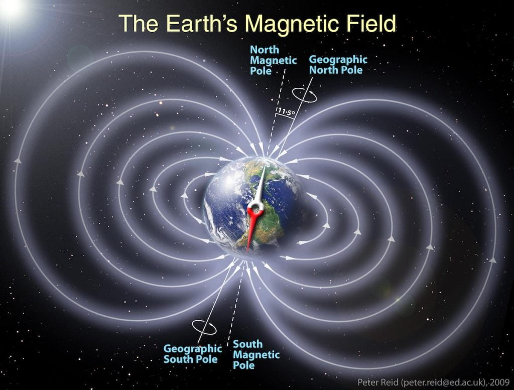
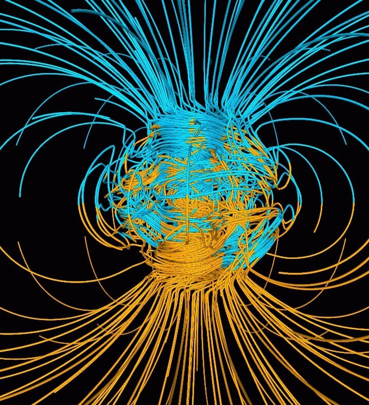
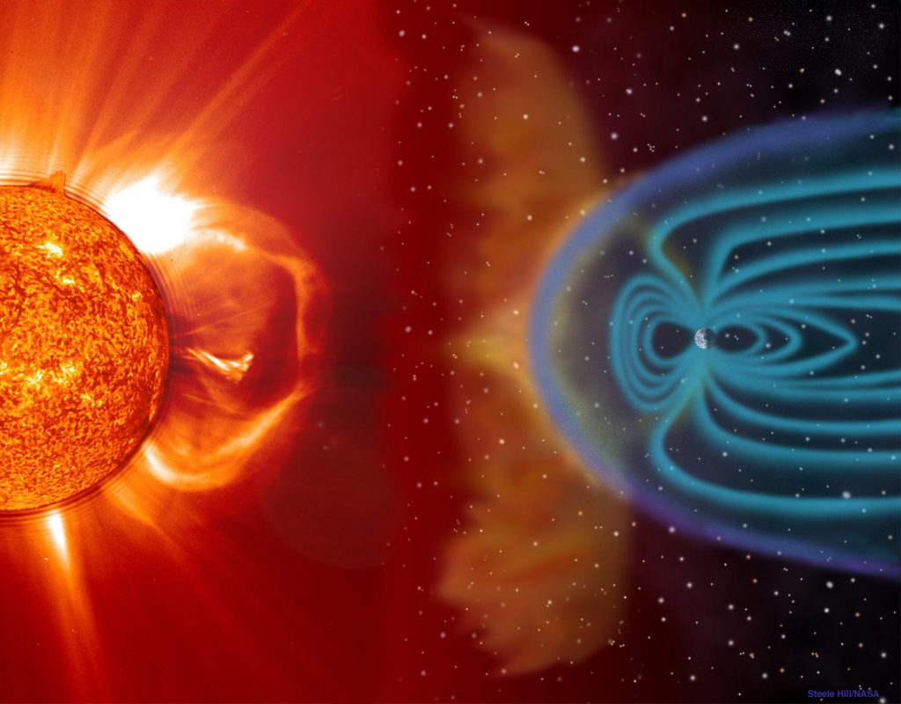

ဒီလို သံလိုက်စက်ကွင်း တောင်မြောက် ပြောင်းသွားရင် ပထမဆုံး ကြုံတွေ့ရ မှာကတော့ သံလိုက်အိမ်မြောင်တွေ အားလုံး ပြောင်းပြန် ဖြစ်ကုန်မှာ ဖြစ်ပါတယ်။ သံလိုက်အိမ်မြောင်ရဲ့ မြောက်ကို ပြတဲ့ လက်တံက တောင်ဖက်ပြောင်းသွားပြီး တောင်ဖက်ပြတဲ့ လက်တံက မြောက်ဖက်ကို ပြောင်းသွား ပါလိမ့်မယ်။

ကမ္ဘာပျက် ဝါဒီတွေကတော့ ဒါဟာ ကမ္ဘာကြီး ပျက်တော့မယ့် Dooms Day ဖြစ်တယ်လို့ ဆိုပါတယ်။ နာဆာ အာကာသ အေဂျင်ဆီ ကတော့ ဒါကို ငြင်းဆိုထားပါတယ်။ ဒီလို သံလိုက်စက်ကွင်း ပြောင်းပြန် ဖြစ်တာဟာ မကြာခဏ ပုံမှန် ဖြစ်ရိုးုဖြစ်စဉ် ဖြစ်လို့ ဘာမှ စိုးရိမ်စရာ မရှိဘူးလို့ သတင်းထုတ်ပြန် ထားပါတယ်။
ပညာရှင် အချို့ကတော့ ဖြစ်စဉ်ဟာ လုံးဝ အန္ဓရာယ် ကင်းမှာတော့ မဟုတ်ဘူးလို့ ဆိုပါတယ်။ ဒီလိုပြောင်းလဲမှုဟာ နှစ် ၂၀၀၀ လောက် ကြာတတ်ပါတယ်။ ကောင်းတာကတော့ ကျွန်တော်တို့တွေ ပြင်ဆင်ချိန် အလုံအလောက် ရမှာပါ။

သံလိုက်စက်ကွင်း ပြောင်းပြန်ဖြစ်တဲ့ ဖြစ်စဉ်ရဲ့ အကြိုးဆက် အသေးစိတ်ကိုတော့ ပညာရှင်တွေ အတိအကျ မခန့်မှန်း နိုင်သေးပါဘူး။ ဒါပေမယ့် အချို့ Dooms Day သမားတွေ ပြောနေသလိုတော့ ကမ္ဘာပျက်ပြီး လူသားတွေ မျိုးတုန်းသွားမှာ မဟုတ်ဘူးလို့ National Geographic မဂ္ဂဇင်းကြီးက ဆိုပါတယ်။

(1) National Geographic | No, We’re Not All Doomed by Earth’s Magnetic Field Flip
(2) Metro | Earth’s magnetic poles ‘could be about to flip’ – and the signs are already here